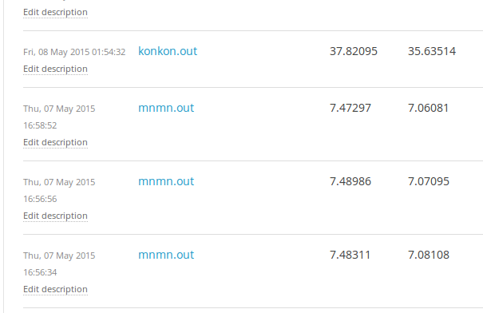

我們本來想 fine tune HW1 HW2 的 model ，
並且改成 n-best HMM, but...
好險 Kaggle 有幫我們存檔
We try to use word2vec, but...
直接用助教的 code ， 過 Simple baseline。
Result
mtls0_sx200: "can't o' this taut paw earn the peaches "
mnjm0_sx140: "call o' raw saw on valley this true "
mwbt0_si2183: "books a o' o' schnooks "
def calc(a):
len_ = len(a)
dp = [0] + [10**9] * (len_)
bk = [None] * (len_ + 1)
for i in range(1, len_+1):
for j in range(i):
for wd, rep in dict.items():
dis = (edit_distance(a[j:i], rep)
- alpha * np.log(len(wd)*(counter[wd]+len(wd)+1))
+ delta
)
if dp[j] + dis < dp[i]:
dp[i] = dp[j] + dis
bk[i] = (j, wd)
pos = len_
ans = []
while pos:
ans = bk[pos][1].split(' ') + ans
if len(bk[pos][1].split(' ')) > 1:
print(bk[pos][1])
pos = bk[pos][0]
return (ans, dp[-1]/len_)
注意到句子有很多是重複的！ 只是不同人唸。
利用剛剛的演算法得出最佳的解答，全部輸出他！
| Method | Err |
| WFST | 6.52 |
| WFST 1000-best + Word2Vec LM | 6.92 |
| Our decoding algorithm | 5.66 |
| Our decoding algorithm + Guess the best | 5.23 |
| Our decoding algorithm after fine tuning + Guess the best | 5.17 |